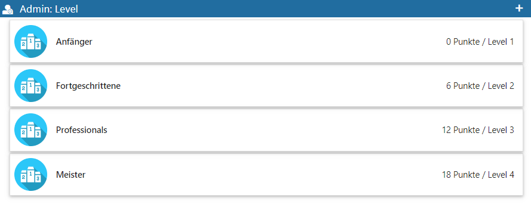
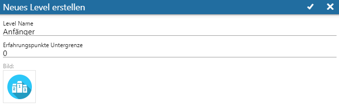

Teilnehmer bekommen für bestimmte Ränge in Ranglisten und für erreichte Erfolge Erfahrungspunkte. Je mehr Erfahrungspunkte ein Teilnehmer erhalten hat, desto höher ist sein Level.
Diese Level können in der
1 WinLine INFO
1 SMART
1 SCORE
aus dem Menüpunkt
1 Admin
1 Level verwalten
administriert werden.

Über das "+"Icon in der Kopfleiste können Level erstellt, bzw. innerhalb einer bereits bestehenden Struktur auch bearbeitet werden.
Erfahrungspunkte können für das Erreichen von Rang 1 nach Ablauf des definierten Zeitfensters einer Rangliste, für die Erfüllung von Geschäftszielen, oder für das Erreichen von einmaligen Erfolgen vergeben werden. Die entsprechende Definition dafür erfolgt im jeweiligen Admin-Bereich der SMART SCORE Elemente (Ranglisten, Geschäftsziele, bzw. einmaliger Erfolge).
Für jedes Level können drei Angaben getätigt werden:

Ø Level Name
Passend zum Level muss eine Bezeichnung vergeben werden.
Ø Erfahrungspunkte Untergrenze
Die Erfahrungspunkte-Untergrenze, ab der der Teilnehmer das Level erreicht hat (beim ersten Level beträgt die Untergrenze so z. B. "0").
Ø Bild
Hier wird eine optionale Grafik eingepflegt. Ist diese nicht gesetzt, wird stattdessen der Rang des Levels in einem blauen Kreis dargestellt.
Hinweise
Beim Erstellen eines neuen Levels gelten die folgenden Regeln:
ü Es muss immer ein Level geben, welches "0" Erfahrungspunkte als Untergrenze erwartet, damit jeder Teilnehmer garantiert ein Level hat.
ü Es darf kein Level geben, welches weniger als 0 EP als Untergrenze erwartet.
ü Es gibt nur positive Erfahrungspunkte.
ü Keine Level-Untergrenze darf doppelt vorkommen. Gibt es z. B. bereits ein Level mit 30 Erfahrungspunkten als Untergrenze, so kann kein zweites Level mit derselben Untergrenze angelegt werden.
ü Die Reihenfolge der Level ergibt sich automatisch aus der Erfahrungspunkte-Untergrenze.
ü Das höchste Level ist "nach oben offen". D. h., dass Teilnehmer (die es erreicht haben) auch erkennen, dass sie oben angekommen sind.